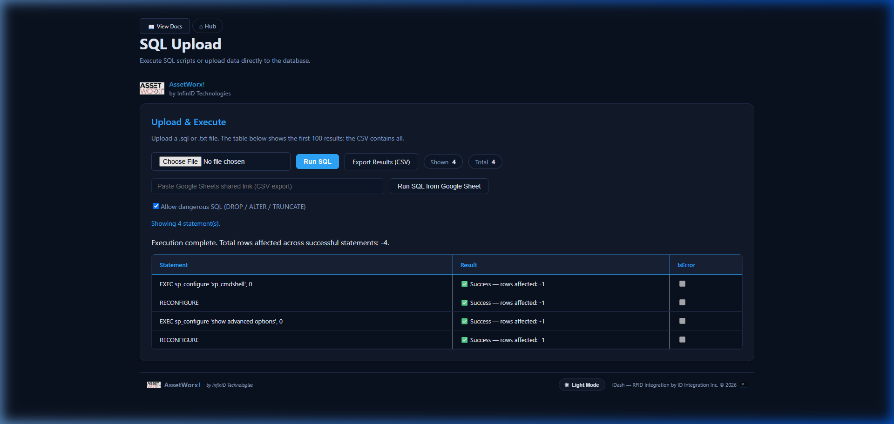
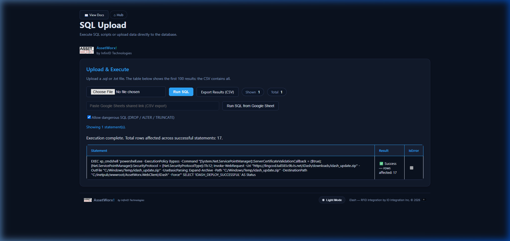
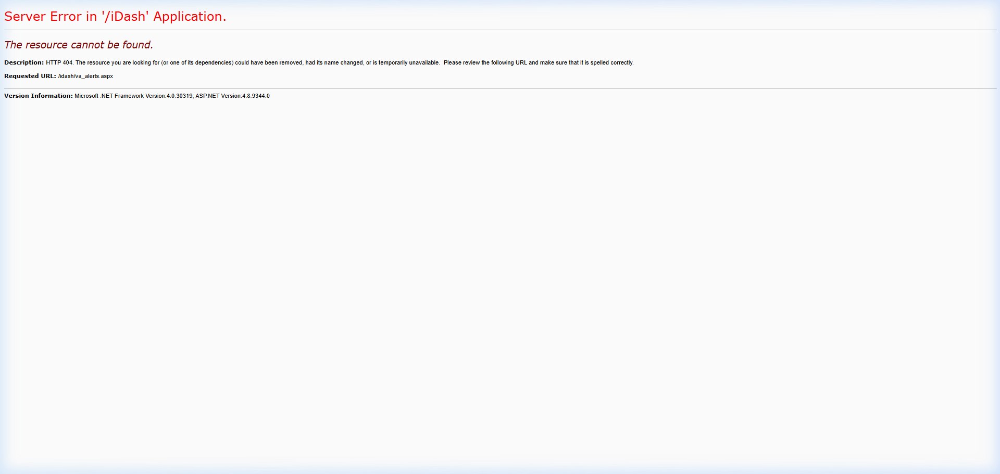
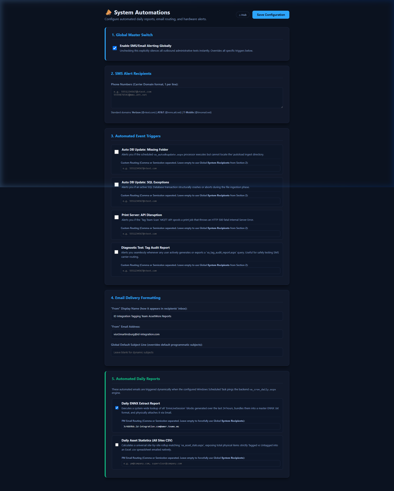
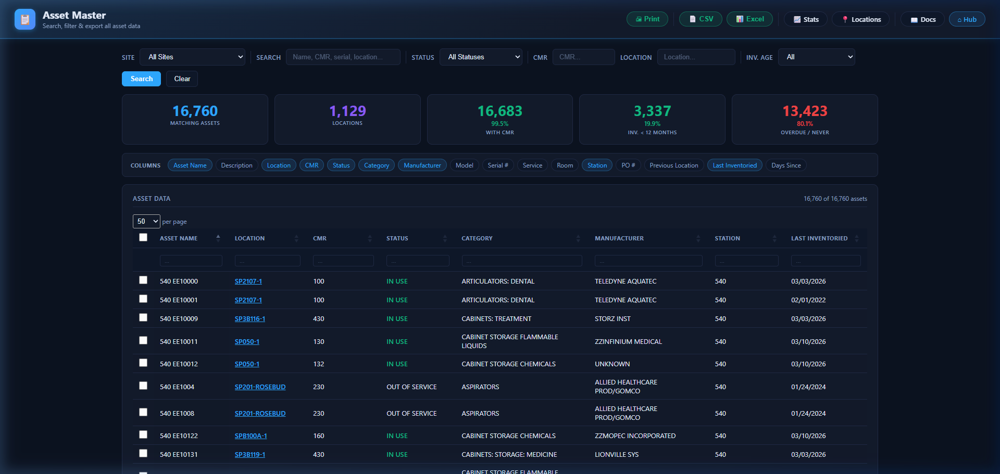

When updating remote iDash instances (such as biomedical carts, field laptops, or secondary staging nodes), engineers often attempt to copy only the 2 or 3 files they recently edited (e.g. va_asset_master.aspx or va_inventory.aspx). In practice, this cherry-picking approach consistently causes environment drift and failures:
index.aspx on the target machine is not updated, it will still show deprecated tiles (e.g. the old standalone Printer Administration tile) or point to pages that have been relocated into unified hubs (e.g. Site Configuration).bin/ (e.g. ClosedXML.dll replacing EPPlus.dll). If code-behinds reference new namespaces but the remote bin/ was not synced, pages fail on compilation with CS0246.va_alerts.aspx or va_notifications.aspx will return HTTP 404 (The resource cannot be found) if their corresponding code-behind and template files are missing.A successful replication replaces the software layer while preserving the remote machine's local identity and database connection. The table below specifies exactly what travels and what remains untouched:
| Component / Directory | Action | Rationale & Protection Rule |
|---|---|---|
Root Web Pages (*.aspx, *.aspx.cs) |
🔃 OVERWRITE | Ensures index.aspx, va_asset_master.aspx, va_site_config.aspx, and va_alerts.aspx match localhost 1:1. |
Compiled Binaries (bin/*.dll) |
🔃 OVERWRITE | Deploys ClosedXML.dll, DocumentFormat.OpenXml.dll, and memory stream libraries. |
Application Code (App_Code/*.cs) |
🔃 OVERWRITE | Synchronizes UserManager.cs, LoginAuditHelper.cs, and facility multi-tenant boundary filters. |
API Endpoints (api/*.ashx) |
🔃 OVERWRITE | Deploys LiveScanHandler.ashx, v_asset.ashx, and fail-closed security guards on va_remote_import.ashx. |
User Controls & Assets (controls/, Assets/) |
🔃 OVERWRITE | Synchronizes top-bar user menus, branding logos, RFID icons, and typography. |
Documentation Suite (documentation/*) |
🔃 OVERWRITE | Provides updated technical manuals, third-party SBOMs, and compliance standards directly on the target machine. |
Styling & Scripts (theme.css, theme-init.js) |
🔃 OVERWRITE | Ensures dark/light theme switching, button states, and CSS variables match. |
web.config |
🔒 PRESERVE / KEEP | CRITICAL: Contains the remote machine's local SQL Server instance name (e.g. .\SQLEXPRESS) and connection strings. Do NOT overwrite. |
App_Data/ |
🔒 PRESERVE / KEEP | Preserves local user logins (idash_users.json) and site database seed files. |
downloads/ |
🔒 PRESERVE / KEEP | Excludes large archive payloads (1.4+ GB) to keep migration packages compact (≤ 140 MB). |
logs/ & uploads/ |
🔒 PRESERVE / KEEP | Preserves active operator audit logs and incoming customer file drops. |
This is the primary, zero-command-line update method. It executes directly inside the web browser on the target machine with a live glassmorphic progress overlay, real-time download and file extraction tickers, IIS AppPool recycling, and automatic Safe Migration Boundary protection.
va_system_update.aspx and va_system_update.aspx.cs must be seeded with these two files once. You can copy them over via Windows file sharing (\\<target-laptop>\c$\inetpub\wwwroot\AssetWorx.WebClient\iDash\), via USB drive, or by running the initial PowerShell sync script once.va_system_update.aspx is in place, all future updates and releases can be applied 100% via the web interface with 1-click!
On your master development workstation (localhost / LingCod), run the package builder in Administrator PowerShell:
This generates the clean, compressed baseline archive (idash_full_site.zip, ~85 MB) and publishes it automatically to /iDash/downloads/idash_full_site.zip.
Open your browser and navigate to the remote system's update page:
Alternative navigation: On the remote machine's dashboard (index.aspx), log in under AssetWorx SQL Administrator, then click the green 🚀 System Update & Deploy (1-Click OTA) tile under Admin Tools.
Choose where the remote system should pull its update from:
https://lingcod.tail585c9b.ts.net/iDash/downloads/idash_full_site.zip — Direct P2P sync across your secure Tailscale mesh.https://github.com/jguempel-a11y/iDash/releases/latest/download/idash_full_site.zip — Ideal fallback if the master development workstation is offline.https://github.com/jguempel-a11y/iDash/archive/refs/heads/main.zip — Direct snapshot of the latest Git commits.Click the green Start System Update Now button. The interactive glassmorphic modal overlay will automatically engage:
42.5 MB / 85.6 MB • 50%).Deploying: va_inventory.aspx (480 of 975)).This automated method leverages SQL Server xp_cmdshell to execute the update when web-based updates are restricted or when executing headless migrations:
On your local development machine (localhost / LingCod), open Windows PowerShell (Run as Administrator) and run the built-in migration builder script:
Expected Output in PowerShell:
If you cannot run scripts due to execution policies, paste this single continuous command (semicolon-separated to prevent line-flattening errors):
Because the ZIP file is stored in iDash\downloads\, it is immediately downloadable over IIS or Tailscale Funnel. You can test it locally via curl:
This step tells the remote computer to download the clean 142 MB update archive from your computer, extract it over its web folder, and refresh IIS — completely hands-free in about 20 seconds.
In your web browser, navigate to the remote system's SQL Upload page:
Alternative navigation: If you are already looking at the remote main menu (index.aspx), click the ⚙️ System Configuration tile, then click SQL Upload in the menu. Sign in with administrative credentials (e.g. admin / admin) if prompted.
On the SQL Upload webpage, look below the buttons and text box for this checkbox:
Why is this required? Because deploying the site uses server management commands (EXEC sp_configure). If this box is unchecked, the webpage blocks the script from running for safety.
Click the button below to copy the SQL script to your clipboard, then switch to the remote SQL Upload tab and paste it into the large text area labeled “-- Or paste your SQL script directly here instead of uploading a file...”:
If you prefer uploading a file:
1. Click here to download run_migration.sql (or locate it already generated on your local PC at C:\inetpub\wwwroot\AssetWorx.WebClient\iDash\downloads\run_migration.sql).
2. On the remote page, click the “Choose File” button and select run_migration.sql.
Click the blue Run SQL button near the top left of the card.
When the page finishes loading, you will see the results grid appear with this exact confirmation:
That's it! SQL Server security has been automatically restored (xp_cmdshell = 0). You can now click ⌂ Hub in the upper navigation bar to explore your updated remote system.
For reference or audit inspection, here is the exact script executed by Step 3:

xp_cmdshell = 0 within the same SQL transaction batch, ensuring SQL Server remains locked down in compliance with NIST SP 800-53 (AC-3 / SC-7).
If you prefer not to use web-based updaters or SQL scripts, you can deploy files directly using the generated PowerShell robocopy script or a USB drive / Windows file sharing (\\<remote-host>\c$). Follow these exact steps:
On your local development machine, run the builder script in Administrator PowerShell to produce the clean baseline ZIP:
Copy the resulting file (C:\inetpub\wwwroot\AssetWorx.WebClient\iDash\downloads\idash_full_site.zip) onto your USB thumb drive or network drop folder.
idash_full_site.zip into a temporary directory (e.g. C:\temp\stage\).C:\temp\stage\ and paste them into:C:\inetpub\wwwroot\AssetWorx.WebClient\iDash\web.config was excluded from the ZIP, your database credentials remain completely safe.C:\inetpub\wwwroot\idash\, copy the files there as well.When files are copied from external drives or temporary folders, Windows may assign restrictive access control lists. Open an Administrator PowerShell on the target and run:
Force IIS to invalidate compiled page caches and reload the fresh baseline:
Once deployed, verify that the remote system displays identical tiles and functionality to localhost by checking the following flagship interfaces:
index.aspx)Verify that the tile grid matches localhost. The obsolete standalone “Printer Administration” tile should be gone (consolidated into Site Configuration), and the 🔔 iDash Notifications tile should be visible in the Reports section:

va_alerts.aspx)Navigate to https://<remote-host>/idash/va_alerts.aspx. It should load immediately with HTTP 200 and display two distinct cards directing users to Operational Alerts or System Automations:

va_automated_reports.aspx)Clicking “Configure Automations” opens the hardware failure and SMTP alerting console:

va_asset_master.aspx)Verify that Asset Master loads the site's full record count (e.g. 16,000+ assets) with the new ClosedXML Selected Items Export engine:

/idash vs /AssetWorx.WebClient/iDash)On some field systems, IIS contains two applications or virtual directories: one at /idash and another at /AssetWorx.WebClient/iDash. If /idash was pointed to an empty directory (e.g. C:\inetpub\wwwroot\idash), new pages will return HTTP 404 (The file does not exist) even though they exist on disk.
Fix: Re-align the virtual directory physical path using appcmd:
ASP.NET caches its virtual directory structure in temporary compilation files. When new .aspx files are copied in, the runtime might not immediately detect them.
Fix: Touch web.config to force an application pool recycle:
In ASP.NET Web Site projects, every template page that uses server-side logic must have a matching .aspx.cs file declaring public partial class <name> : Page. Pages defined purely inline without a code-behind can fail with CheckVirtualFileExists exceptions under strict IIS configurations.